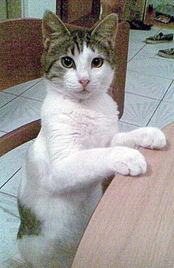
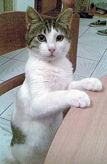


 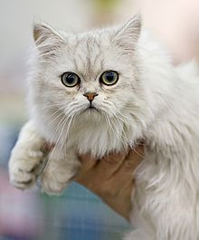
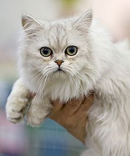
 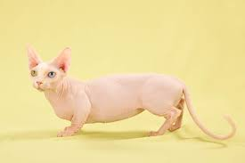
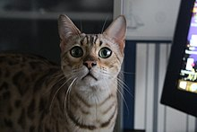
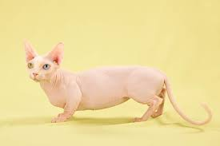
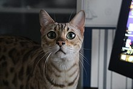
 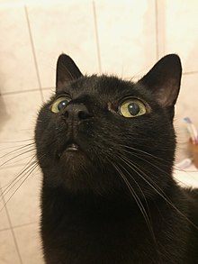
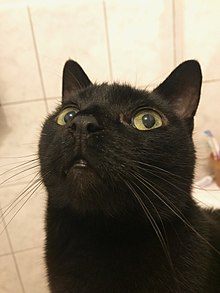

 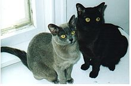
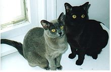

 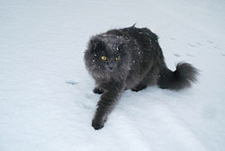
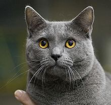
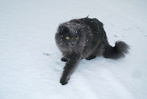
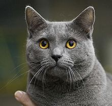


it is fresh
The Abyssinian /æbɪˈsɪniən/ is a breed of domestic short-haired cat with a distinctive "ticked" tabby coat, in which individual hairs are banded with different colors. The breed is named for Abyssinia (now called Ethiopia), from which it supposedly originated.
The Aegean cat (Greek: γάτα του Αιγαίου gáta tou Aigaíou) is a naturally occurring landrace of domestic cat originating from the Cycladic Islands of Greece. It is considered a natural cat, developing without human interference. Development of the Aegean cat as a formal breed began in the early 1990s by breeders in the fledgling Greek cat fancy, but the variety has yet to be recognized by any major fancier and breeder organization. It is considered to be the only native Greek variety of cat.